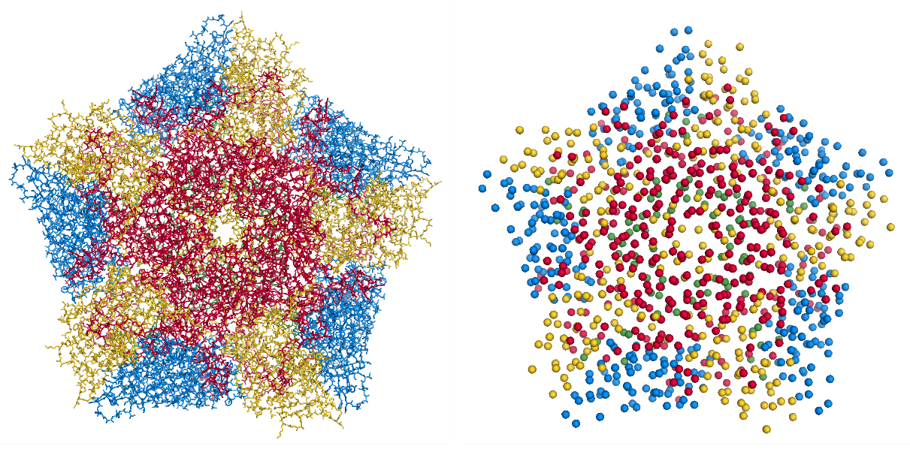

NMA Tutorial¶
Enterovirus 71 (EV-71) is a human pathogen that predominantly infects small children. The capsid is icoshedral and contains 60 protomer units. In a mature capsid the protomers are assembled as a set of 12 pentamers. Each protomer contains a single copy of the proteins VP1-VP4. During infection the virus capsid expands to release its RNA into the host cell. This expanded capsid is known as the A-particle.
Aim¶
In this tutorial we will apply the ANM model to a single pentamer of the mature EV-71 capsid. We aim to identify the normal modes that contribute to the conformational changes within a pentamer during capsid expansion.
Create a working directory¶
First create a directory for all the MODE-TASK scripts using the Linux command:
mkdir ModeTask
Copy the entire contents of the MODE-TASK Scripts in to the MODE-TASK directory.
Within this directory create a folder called Tutorial:
cd ModeTask mkdir Tutorial
We will run all scripts from the ModeTask directory.
Preparation of structures¶
- Download the 3VBS biological assembly (3VBS.pdb1) of the mature EV-71 capsid.
- Open 3VBS.pdb1 in PyMol.
- Use the split_states 3VBS command to visualise the full capsid.
- Save the capsid: File – Save Molecule – Select the first 5 states. Save as EV71_Pentamer.pdb into the ModeTask/Tutorial directory.
Each protomer has 4 subunits: VP1-VP4. VP4 is an internal capsid protein.
- Number of residues per protomer = 842
- Number of residues per pentamer = 4210
The estimated run time to perfom ANM on a complex of 4210 residues, using Mode Task is 25 hours.
For the sake of this tutorial we will use the coarseGrain.py script to construct a pentamer with lower resolution pentamer.
Coarse grain¶
The MODE-TASK package is designed to analyse both single proteins or larger macromolecules such as a virus capsid. The ANM.cpp script contructs an elastic network model on all CA or CB atoms in a given PDB file. This is ideal from smaller protein complexes. For larger protein complexes the coarseGrained.py script can be used to construct an additional coarse grained PDB file.
- Create a model of the EV71 Pentamer complex with additional coarse graining set at level 3, selecting CB atoms:
coarseGrain.py --pdb Tutorial/EV71_Pentamer.pdb --cg 3 --startingAtom 1 --output EV71_CG3.pdb --outdir Tutorial --atomType CB
The input paramaters include:
- pdb: This is the pdb structure that you wish to coarse grain
- cg: This specifies the level of coarse graining. To select fewer atoms increase the level
- starting atom: This specifies the first residue to be selected in the complex
- output: The filename of the coarse grained pdb file
- outdir: The directory in which to save the coarse grained pdb file
Output:
- EV71_CG3.pdb: A coarse grained pdb file that has selected CB atoms from residues that are equally distributed across the complex (Figure 1).
- Command line output
Started at: 2017-08-22 11:54:19.392835 No. atoms selected per unit: 122 from 842 orignal residues No. atoms selected per macromolecule: 610 from 4210 orignal residues Completed at: 2017-08-22 11:54:19.509456 - Total time: 0:00:00
Note, the same 212 atoms in from each protomer were selected – thus the symmetry of the pentamer is retained.
- Create a model of the EV71 Pentamer complex with additional coarse graining set at level 4:
coarseGrain.py --pdb Tutorial/EV71_Pentamer.pdb --cg 4 --startingAtom 1 --output EV71_CG4.pdb --outdir Tutorial --atomType CBStarted at: 2017-08-22 11:54:53.484248 No. atoms selected per unit: 54 from 842 orignal residues No. atoms selected per macromolecule: 270 from 4210 orignal residues Completed at: 2017-08-22 11:54:53.586145 - Total time: 0:00:00Fig 1. Left) Crystal structure of the EV71 Pentamer (3VBS). Right) EV71_CG3.pdb contains 610 CB atoms from 4210 total residues.
Mode decomposition¶
The ANM.cpp script accepts a PDB file and a cutoff distance. The script constructs the hessian matrix connecting all CB atoms in within the specific cutoff radius. The script then performs singular value decompostion to return the eigenvalues and eigenvectors of the hessian matrix.
Input parameters:
- pdb: path to PDB file
- cutoff: cutoff radius in A. The script will construct an eleastic network model by connecting all atoms that interact within the cutoff distance (default = 15Å)
- outdir: folder in which output is saved
Output:
W_values.txt: A list of 3N eigenvalues the normal modes of the system. Eigenvalues are ordered from fastest to slowest mode.
VT_values.txt: A 3Nx3N list of the eigenvectors for each mode. Eigenvectors are printed as a set of rows.
U_values.txt: A 3Nx3N list of the eigenvectors for each mode. Eigenvectors are printed as a set of columns.
- Compile the ANM.cpp script
The ANM.cpp script requires classes of the AlgLib library. These class can be found in the cpp/src folder in the GitHub Directory. The path to these classes must be specified in the compile command using the -I paramter:
g++ -I cpp/src/ ANM.cpp -o ANM
In this tutorial we will perform a comprative analysis between the normal modes of the EV71_CG3.pdb and EV71_CG4.pdb
- Run the ./ANM to analyse EV71_CG4.pdb with a cutoff of 24Å
./ANM --pdb Tutorial/EV71_CG4.pdb --outdir Tutorial --atomType CB
Example of command line output:
Started at: 2017-08-22 11:55:33 Starting Decomposition Completed at: 2017-08-22 11:55:47 - Total time: 0:00:13
- Run the ./ANM to analyse EV71_CG3.pdb
3.1) First make a sub-directory to avoid overwriting of your previous ANM outout:
mkdir Tutorial/CG3
3.2)
./ANM --pdb Tutorial/EV71_CG3.pdb --outdir Tutorial/CG3 --atomType CB
Example of command line output:
Started at: 2017-08-22 11:56:42 Starting Decomposition Completed at: 2017-08-22 11:59:14 - Total time: 0:02:0-704
Indentification of modes that contribute to conformational change¶
We have performed ANM on two separte pentamer complexes. From each model we have obtained a set of eigenvalues and eigenvectors corresponding to each normal mode:
- EV71_CG4.pdb, total non-trivial mdes = 804
- EV71_CG3.pdb, total non-trivial mdes = 1824
For each model we will now identify the modes that contribute to the conformational change of a pentamer during capsid expansion.
We will then compare the modes from the respective models and determine if the additional coarse graining effected the ability to capture such modes.
To determine if our modes overlap with the direction of conformational change, we must first determine the conformational change between the crystal structures of the mature and A-particle pentamer. The conformationMode.py scripts take two UNALIGNED pdb files and the set of all eigenvectors determined for the complex. The script aligns the structures, calculates the known conformational change and then identifies which modes contribute to the change.
Conformation mode¶
- Compute overlap between all modes of the EV71_CG4 model:
conformationMode.py --pdbANM Tutorial/EV71_CG4.pdb --vtMatrix Tutorial/VT_values.txt --pdbConf Tutorial/Apart_Pentamer.pdb --outdir Tutorial/ --atomType CB
Input paramters:
–pdbANM: This is the PDB file that you use to run ANM. Do not use the aligned file here
–vtMatrix: The eigenavalues obtained from ANM of the EV71_CG4 model
–pdbConf: This is the pdb file of the conformational change. In this case the pentamer of the A-particle (The –pdbANM and –pdbConf must NOT BE ALIGNED)
Output:
A text file with the overlap and correlation of each mode to the conformational change. The modes are ordered by the absoulte value of their overlap.
- Compute overlap between all modes of the EV71_CG3 model (Remember to specify the correct directory):
conformationMode.py --pdbANM Tutorial/EV71_CG3.pdb --vtMatrix Tutorial/CG3/VT_values.txt --pdbConf Tutorial/Apart_PentamerAligned.pdb --outdir Tutorial/CG3 --atomType CB
Top output from conformationalMode.py of EV71_CG4:
MODE Overlap Correlation Mode: 802 0.464930905363 0.505024336385 Mode: 799 0.288299273538 0.212056909378 Mode: 775 -0.251274270888 0.102742699068 Mode: 748 0.247685561536 0.131291816799 Mode: 788 0.212254981509 0.0620242553959 Mode: 705 0.182970920364 0.134255823159 Mode: 785 -0.16260558288 0.230938806173 Mode: 203 0.161599915581 0.0168408447117 Mode: 754 -0.152172952906 0.142214445993 Mode: 397 0.1331492216 0.240388245613 Mode: 622 -0.13150716791 0.13057940904 Mode: 280 0.12871454907 0.0444642851196 Mode: 774 0.123724858059 0.0394196518151 Mode: 793 0.116201325237 0.0236754652566 Mode: 750 0.116127226795 0.167416988474
Top output from conformationalMode.py of EV71_CG3:
MODE Overlap Correlation Mode: 1822 -0.415600190243 0.247290729903 Mode: 1816 0.252625858163 0.113261133544 Mode: 1746 0.175581842737 0.306224937911 Mode: 1745 0.13950940547 0.303095607429 Mode: 1747 0.138225569708 0.297843432141 Mode: 1659 0.137739698541 0.272789201446 Mode: 1801 -0.136763146302 0.210065050974 Mode: 1730 0.136567023438 0.299515587264 Mode: 1665 -0.133241326847 0.354553903803 Mode: 1793 -0.13005798464 0.202987256131 Mode: 1738 -0.120706064305 0.220396792939 Mode: 1800 0.120606594989 0.178140199695 Mode: 1774 -0.12050356591 0.126790378565 Mode: 1408 -0.103297837303 0.346942965669 Mode: 1754 -0.103052988178 0.312731487395
Mode visualisation¶
From each model we have identified which mode overlaps the most with the direction of the conformational change. We can now visualise these modes.
- First we must extract the eigenvectors of each mode using the getEigenVectors.cpp script. This is a c++ script and must be complied:
g++ -I cpp/input/ getEigenVectors.cpp -o getEigenVectors
1.1) Obtain eigenvectors for mode 802 of the CG4 model. Note this overlap is postive, thus the vectors act in the opposite direction to conformational change. Therefore we must specify the direction as 1 when extracting the vectors:
./getEigenVectors --vtMatrix Tutorial/VT_values.txt --mode 802 --direction 1 --outdir Tutorial/
1.1) Obtain eigenvectors for mode 1822 of the CG3 model. However the overlap for this mode was negative, therefore we must specifify direction as -1
./getEigenVectors --vt Tutorial/CG3/VT_values.txt --mode 1822 --direction -1 --outdir Tutorial/CG3
- We can now project these vectors onto the respective models using the visualiseVector.py script and then visualise them as a set of frames in VMD:
2.1) Mode 802 of CG4:
visualiseVector.py --pdb Tutorial/EV71_CG4.pdb --vectorFile Tutorial/EVectors802.txt --mode 802 --outdir Tutorial/ --atomType CB
2.2) Mode 1822 of CG3:
visualiseVector.py --pdb Tutorial/CG3/EV71_CG3.pdb --vectorFile Tutorial/CG3/EVectors1822.txt --mode 1822 --outdir Tutorial/CG3 --atomType CB
Output from visualiseVector.py
The script will produce a folder named VISUALISE. For every mode that you give to visualiseVector.py two files will be produced:
- A VISUAL PDB file. This can be opened in VMD and visualised as a set of 50 frames.
- An VISUAL_ARROWS txt file. This file contains a Tcl script that can be copied into the VMD TK console. The script plots as set of arrows indicating the direction of each atom.
Visualising the results in VMD
- Open VMD.
- To load the VISUAL_802.pdb file click the following tabs:
File >> New Molecule >> Browse >> Select VISUAL_802.pdb. - The VISUAL_802.pdb file contains a set of 50 frames of the eigenvectors of mode 802. This can be visualised as a movie by click on the Play button. The frame set can also be coloured to the user’s desire using the options under the Graphics >> Representations tab.
- The VISUAL_ARROWS txt file contains a script that can be copied and pasted straight into the Tk Console in VMD: Extensions >> Tk Console
- To obtain a clearer observation change the background to white: Graphics >> Colors >> Categories >> Display >> Names >> Background >> Colors >> White
- To obtain only the arrows, delete all frames of the VISUAL_802.pdb molecules: Right click on the number of frames >> Delete frames >> Delete frames 0 to 49.
Mean square fluctuation (MSF)¶
Lastly we will use the meanSquareFluctuations.py script to calculate the MSF of the CB atoms. The scripts allows you to calculate:
- the overall MSF, calculated over all modes
- the MSF of the CB atoms for a specific mode, or a specific range of modes.
The script also allows for comparison of MSF obtained from modes of obtained from different models. We can use the –pdbConf2 paramter to send the script a second PDB model. The script will then calculate the MSF of atoms corresponding to residues that are common between both models.
In this toturial we will analyse the MSF between EV71_CG4 and EV71_CG3.
- First we will calculate the MSF of the CG4 model. We will calculate the overall MSF and the MSF for the mode 802.
meanSquareFluctuation.py --pdb Tutorial/EV71_CG4.pdb --pdbConf2 Tutorial/EV71_CG3.pdb --firstMode 802 --lastMode 802 --wMatrix Tutorial/W_values.txt --vtMatrix Tutorial/VT_values.txt --outdir Tutorial/ --atomType CB
- Next we will calculate the MSF of the CG3 model. We will calculate the overall MSF and the MSF for the mode 1822
meanSquareFluctuation.py --pdb Tutorial/EV71_CG3.pdb --pdbConf2 Tutorial/EV71_CG4.pdb --firstMode 1822 --lastMode 1822 --wMatrix Tutorial/CG3/W_values.txt --vtMatrix Tutorial/CG3/VT_values.txt --outdir Tutorial/CG3/ --atomType CB
Output for Model CG4:
1) EV71_msf.txt: Text file of the overall MSF values for all residues
2) EV71_msfModes802_802.txt: MSF for all residues for mode 802
3) EV71CommonResidues_msf.txt: Overal MSF for residues common between CG4 and CG3.
4) EV71_CommonResidues_msfModes802_802.txt: MSF for residues common between CG4 and CG3 calculated for mode 802 Output for Model CG3:
1) EV71_msf.txt: Text file of the overall MSF values for all residues
2) EV71_msfModes1822_1822.txt: MSF for all residues for mode 1822
3) EV71CommonResidues_msf.txt: overal MSF for residues common between CG3 and CG4.
4) EV71_CommonResidues_msfModes1822_1822.txt: MSF for residues common between CG3 and CG3 calculated for mode 1822